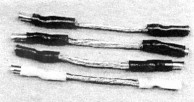
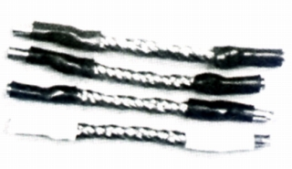
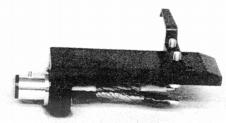
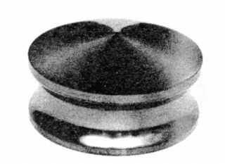
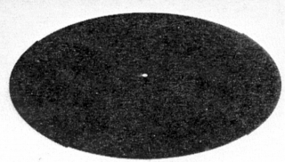

超ラボパーツ
リードワイヤー
LTP-190

■価格 700円
■備考 ポリウレタン被覆の0.08�o径リッツ線90本縒り合わせ
LTP-1180

■価格 2,000円
■備考 ポリウレタン被覆の0.08�o径リッツ線180本縒り合わせ
LPT-12

■価格 12,000円
■備考 新幹線のモーターブラシと同じ材質で作られたシェル
微粒子カーボンで振動を吸収
リードワイヤーはLTP-1180
オーバーハング調整可能
LPT-11

■価格 20,000円
■備考 新幹線のモーターブラシと同じ材質で作られたスタビライザー
微粒子カーボンで振動を吸収
外径80�o、高さ40�o、重量255g
LPS-14

■価格 20,000円
■備考 レコードの原盤であるラッカー盤をアレンジしたターンテーブルシート
直径14インチ（36�p）
姉妹品に直径12インチ（30�p）のLPS-12がある。
その他、カーボンシグナルコードLTP-2100、同アームコードLTP-10、ブラックラッカーLTP-5などがあった。
ビクターのインデックスへ